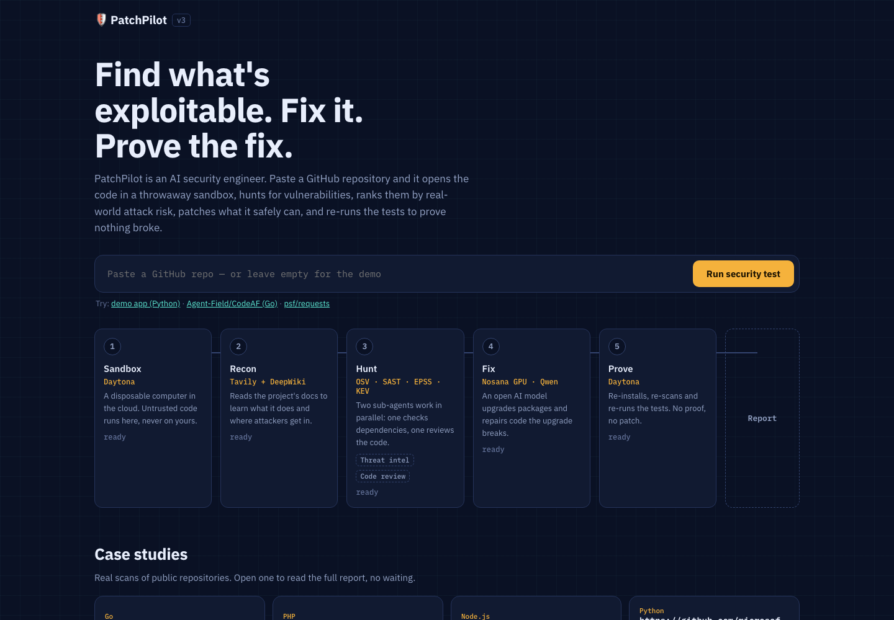
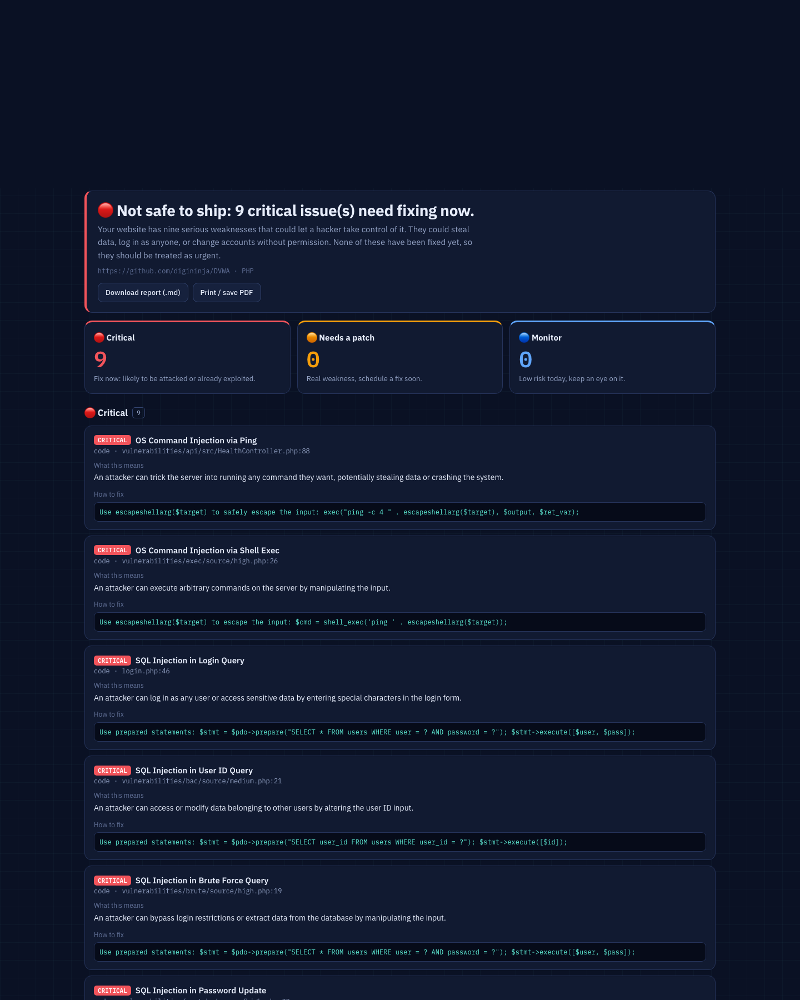

Scanners list hundreds of CVEs with no signal on which ones attackers are actually using right now.
Security upgrades change APIs (e.g. Jinja2 3.1 removed Markup), so patches sit unmerged for months.
Today's AI tools suggest changes but never execute them. Nobody proves the fix works.
Throwaway VM boots in ~1 s. Untrusted code and AI-chosen commands never touch a laptop.
Reads the repo's architecture docs first and maps where attackers get in.
Two parallel sub-agents: Threat Intel ranks CVEs by real exploit odds; Code Review finds injection bugs.
Agent loop (think → act → observe) upgrades packages and repairs code the upgrade broke.
Re-install, re-scan, re-test independently. Never trusts the model's "done".
🔴 Critical · 🟠 Needs a patch · 🔵 Monitor, in everyday words, with the exact fix, diff and PR text.

Landing: paste a repo, watch the 5-stage pipeline live

Report: verdict, Critical / Patch / Monitor, what it means, how to fix
| Partner | How we use it (code) | Why it's essential here |
|---|---|---|
| Daytona | create() · process.exec() · git.clone() · fs.upload/download · delete() | ~1 s boot; runs untrusted repos and AI-chosen commands safely; 4 sandboxes in parallel |
| Nosana | OpenAI-compatible gateway (Qwen 3.8 27B, tool calling) + our own RTX 3080 deployment, $0.10/h, auto-failover | Open model on decentralized GPUs; live credit balance from api.nosana.com |
| Tavily | extract() → DeepWiki recon · search(include_answer) fix research · topic="news" + forums | Fresh knowledge model weights don't have: migration guides, exploit chatter |
$0.003–0.013 of inference per repository; sandboxes deleted after each run.
From GitHub URL to a bucketed report, with a verified patch for Python projects.
FIRST EPSS = probability of exploitation in the next 30 days, plus CISA "exploited in the wild".
Opens PRs only when the sandbox proves tests still pass.
Extend the fixer from Python to Node, Go and PHP (detection already works).
Run on every push; block merges on Critical findings.